China Employee Termination 2026: Pulse Ops-Rhythm Brief for Foreign Employers
Key takeaways
- Foreign employers reduce China termination risk when they run a fixed operating rhythm instead of ad hoc case handling.
- The most effective rhythm is short-cycle: morning legal/evidence check, midday payroll alignment, end-of-day go/no-go review.
- Legal-route clarity must be established early; payroll/tax closure must be verified before communication.
- City-level interpretation should be refreshed as part of daily cadence, not a one-time check.
- This brief leads with practical execution; legal depth follows in the appendix.
What changed and why this matters now
In fast-moving restructuring cycles, teams often know what to do but fail on timing and sequence. The result is predictable: route is approved before evidence is clean, communication is scheduled before payroll is final, and correction work starts after risk has already increased. An operating-rhythm model fixes this by synchronizing legal, HR, and payroll checkpoints through the day.
This run uses an ops-rhythm format (new structure vs prior matrix/switchboard/decision-tree/checklist/signal variants) to give foreign teams a repeatable cadence they can execute under pressure.
Plain-language legal context first
China employer-side termination generally requires a lawful basis and coherent factual/process execution. Public legal anchors include the PRC Labor Contract Law framework, implementing regulation references (including Decree No. 535 context), and Supreme People’s Court labor-dispute interpretation materials. Practical implication for foreign operators: legal defensibility is a sequence problem as much as a legal-text problem.
A rhythm-based workflow helps maintain that sequence integrity.
Pulse operating rhythm (headline-driven)
Rhythm block 1 — Morning: Route + Evidence sync
Objective: confirm legal route still matches latest facts.
Outputs: updated route memo status, contradiction log, city-interpretation check.
No-go trigger: unresolved route-fact mismatch.
Rhythm block 2 — Midday: Payroll + Settlement sync
Objective: ensure compensation/tax/social handling is aligned before any communication lock.
Outputs: final-pay worksheet status, IIT/social notes, payment-proof readiness.
No-go trigger: unresolved payout/tax element.
Rhythm block 3 — Afternoon: Communication control prep
Objective: align script, spokesperson, and meeting protocol with current legal/payroll state.
Outputs: approved script version, briefing confirmation, escalation fallback.
No-go trigger: script drift risk or unbriefed manager.
Rhythm block 4 — End-of-day: Go/Hold decision board
Objective: consolidate cross-functional status and assign next-day actions.
Outputs: go/hold memo, owner assignments, unresolved risk list.
No-go trigger: any critical unresolved issue across route/evidence/payroll/local interpretation.
Why this works for foreign employers
Cross-border teams often lose quality during handoffs across time zones. A fixed rhythm creates predictable checkpoints and clear ownership windows. Instead of one large weekly review, teams detect and fix issues in-day, reducing surprise escalations and last-minute rework.
Practical scenarios
Scenario 1: Route approved, evidence drifts by noon
Morning review is green, but new manager input creates contradictions before midday.
Rhythm response: afternoon communication block cannot proceed; case returns to morning sync lane next cycle.
Scenario 2: Payroll nearly ready but one tax element unresolved
Legal and script are ready, but payroll/tax finalization is incomplete.
Rhythm response: hold at midday block; end-of-day memo reflects conditional hold.
Scenario 3: Local interpretation changes after advisor update
City-level guidance shifts practical route viability.
Rhythm response: immediate return to morning route/evidence block and re-approval sequence.
Role-owned SOP (rhythm execution)
Step 1 — Set daily rhythm board
Owners: HRBP + Legal + Payroll lead
- Create daily status board for each active case.
- Assign block owners and decision authority.
Step 2 — Run block checks on schedule
Owners: function-specific leads
- Execute each rhythm block in order.
- Log outputs and unresolved items.
Step 3 — Enforce no-go triggers
Owners: cross-functional panel
- Stop downstream blocks when critical triggers appear.
- Assign remediation owner with deadline.
Step 4 — Publish end-of-day decision memo
Owners: HR lead + Legal + Payroll
- Record go/hold status and rationale.
- Carry unresolved items into next-day first block.
Step 5 — Weekly retrospective
Owners: Compliance + operations manager
- Review repeated blockers and delay causes.
- Convert recurring friction into workflow improvements.
Required document checklist
- Employee profile and contract context
- Route rationale memo + fallback path
- City-level interpretation note
- Chronology evidence ledger
- Script package and manager briefing log
- Payroll/severance/IIT/social worksheet
- Settlement/acknowledgment records
- Payment proof readiness sheet
- Daily rhythm board history
- Closure memo and archive index
Exception handling playbook
- Late evidence conflict: roll case back to Morning block; pause communication.
- Payroll correction near meeting: hold Midday block completion until resolved.
- Manager script non-compliance: freeze Afternoon block and retrain spokesperson.
- Local interpretation split: escalate immediately and mark day-end hold.
- Repeated day-end holds: launch process redesign review.
System implementation notes
- Track block completion timestamps and hold reasons.
- Require evidence attachments for block sign-offs.
- Add automated alerts for skipped blocks or out-of-sequence actions.
- Build metrics: hold frequency by block, average unblock time, dispute correlation.
- Use monthly analytics to rebalance staffing and controls.
Common mistakes and prevention
- Mistake: running blocks out of order.
Prevention: enforce sequence locks.
- Mistake: treating payroll as end-stage admin.
Prevention: dedicated midday block with hard no-go rule.
- Mistake: one-time local review only.
Prevention: recurring local check in morning block.
- Mistake: no end-of-day decision artifact.
Prevention: mandatory go/hold memo.
- Mistake: repeated blockers without root-cause work.
Prevention: weekly retrospective and control updates.
What to do now
- Implement a 4-block daily operating rhythm for all active China termination cases.
- Assign block owners and explicit no-go triggers.
- Enforce route/evidence checks before payroll and communication steps.
- Require midday payroll/tax closure validation.
- Publish end-of-day go/hold memos for every active case.
- Track recurring block failures and resolve structurally.
- Align global and local teams on this cadence.
What to watch next
- City-level practice shifts may increase morning-block resets.
- High case volume can overload midday payroll capacity.
- Practitioner updates may refine evidence expectations in contested scenarios.
FAQ
1) Why use an operating rhythm instead of one master checklist?
Rhythm enforces timing and sequence, which are frequent failure points in live execution.
2) Can a case move to communication if payroll is amber?
No. Communication should wait until payroll/tax readiness is green.
3) How often should legal route assumptions be revisited?
Daily during active handling, and immediately after new facts emerge.
4) Who owns final daily go/hold decisions?
Cross-functional leadership across HR, legal, and payroll.
5) Is this model useful for small case volumes?
Yes, it still improves clarity and reduces surprise risk.
6) What is the biggest avoidable timing error?
Scheduling communication before midday payroll closure is complete.
7) How do we improve cadence quality over time?
Measure block-level delays and harden controls where holds recur.
Legal depth appendix (secondary)
This brief is based on official/legal and practitioner materials relevant to employer-side termination in China. Core legal anchors include the PRC Labor Contract Law framework, implementing regulation references associated with Decree No. 535 context, and Supreme People’s Court labor-dispute interpretation materials. Practitioner and payroll-context sources support practical execution guidance for foreign employers. Residual uncertainty remains city- and fact-specific and should be validated with localized professional review for live matters.
Disclaimer
This content is informational only and does not constitute legal, tax, or employment advice.
Sources
- National People’s Congress (Labor Contract Law, English text), accessed 2026-03-05: http://www.npc.gov.cn/zgrdw/englishnpc/Law/2007-12/13/content_1384064.htm
- State Council Gazette reference (implementing regulation / Decree No. 535 context), accessed 2026-03-05: https://www.gov.cn/gongbao/content/2008/content_1124615.htm
- Supreme People’s Court labor dispute interpretation update page, accessed 2026-03-05: https://www.court.gov.cn/fabu/xiangqing/243981.html
- China Briefing, Employee Termination in China, accessed 2026-03-05: https://www.china-briefing.com/news/employee-termination-in-china/
- ICLG Employment & Labour Laws and Regulations: China, accessed 2026-03-05: https://iclg.com/practice-areas/employment-and-labour-laws-and-regulations/china
- Littler ASAP analysis on China employment law developments, accessed 2026-03-05: https://www.littler.com/news-analysis/asap/key-recent-developments-chinas-employment-law-china-us-comparative-perspective
- PwC PRC Individual Income Tax summary, accessed 2026-03-05: https://taxsummaries.pwc.com/peoples-republic-of-china/individual/taxes-on-personal-income
Need local employment support in China?
If you need a compliance-first partner for hiring, payroll, and risk controls in China, China-Payroll.com can help evaluate the right setup.
Image Prompt Pack
Create a 16:9 hero image for article title: 'China Employee Termination 2026: Pulse Ops-Rhythm Brief for Foreign Employers'. Scene: global operations team evaluating workforce model options for China market entry. Include motifs: decision matrix, org chart, le…